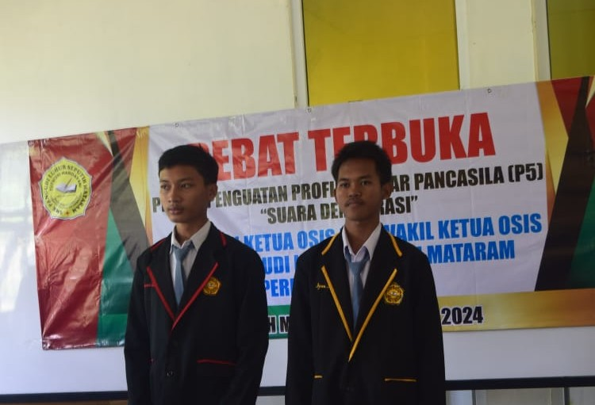

Dokumentasi Pemilihan Ketua OSIS
Pemilihan Ketua OSIS adalah momen penting di SMK Pangudi Luhur Seputih Mataram, di mana siswa belajar demokrasi.
Berikut adalah dokumentasi dari berbagai tahapan pemilihan:

Kandidat 1
Kandidat 1 mempresentasikan visi dan misi.
Selengkapnya

Kandidat 2
Kandidat 2 menjelaskan program unggulannya.
Selengkapnya

Pemungutan Suara
Siswa memberikan suara mereka dalam pemilihan.
Selengkapnya

Penghitungan Suara
Panitia menghitung hasil suara dengan transparansi.
Selengkapnya

Ketua OSIS Terpilih
Ketua OSIS baru menerima pelantikan secara resmi.
Selengkapnya